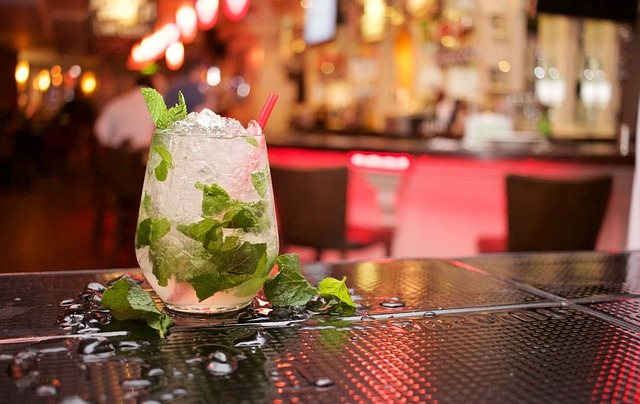
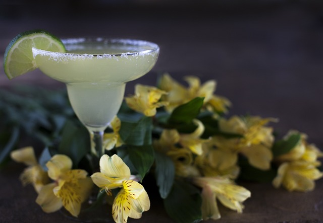
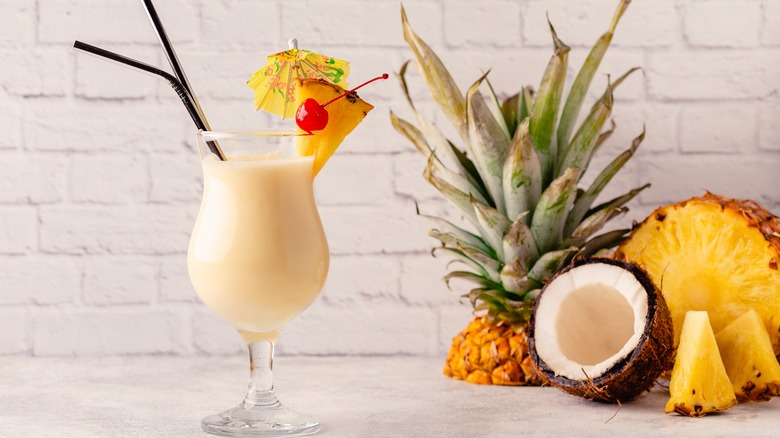
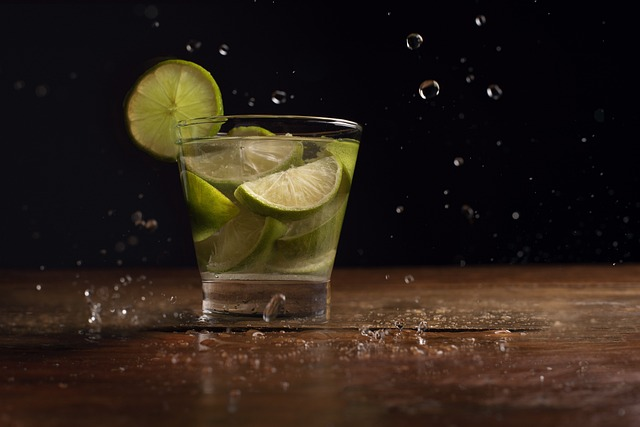
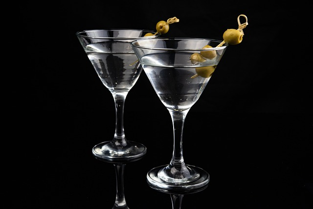
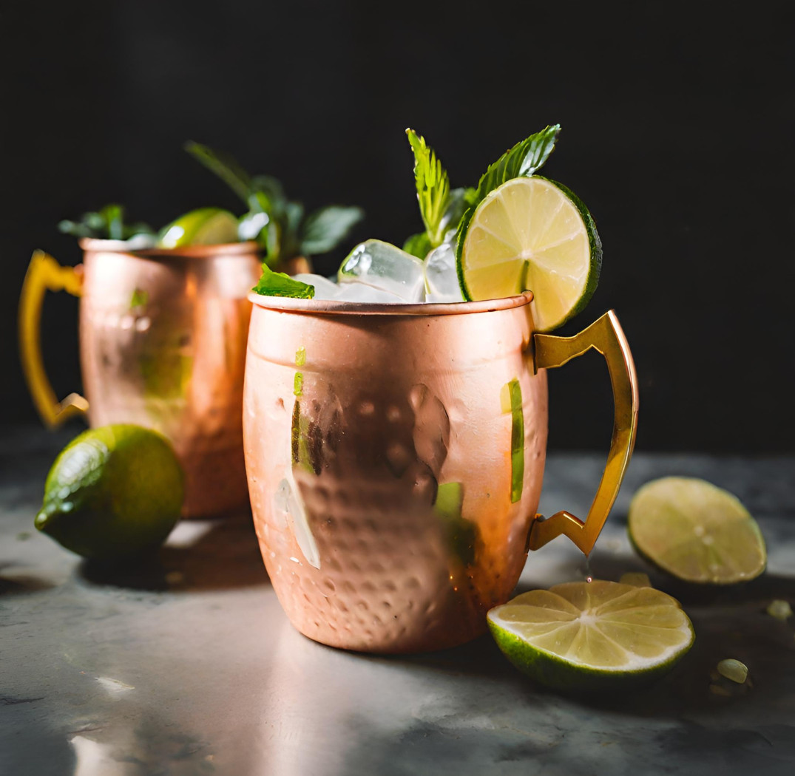
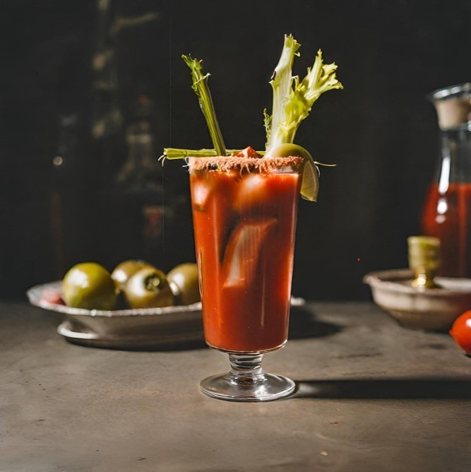

Mojito
Świeży, cytrusowy i orzeźwiający koktajl na bazie rumu, mięty, soku z limonki, cukru i sody.
Składniki:
-50 ml białego rumu
-8-10 listków mięty
-Sok z 1 limonki (ok. 30 ml)
-2 łyżeczki cukru lub syropu cukrowego
-Około 60 g truskawek (opcjonalnie)
-Około 120 ml sody wodnej
-Kostki lodu
Przygotowanie: W szklance lub szklance do muddlingu umieść 8-10 świeżych listków mięty.
Dodaj 2 łyżeczki cukru lub syropu cukrowego.
Za pomocą tłuczka do koktajli (muddlera) delikatnie rozgnieć miętę, aby uwolnić jej aromat.
Wlej sok z 1 limonki (około 30 ml) do szklanki.
Dodaj 50 ml białego rumu.
Włóż kilka kostek lodu do szklanki.
Opcjonalnie dodaj kilka pokrojonych truskawek dla dodatkowego smaku.
Uzupełnij szklankę sodą wodną (około 120 ml).
Delikatnie wymieszaj zawartość szklanki za pomocą długiej łyżki barmańskiej.
Udekoruj koktajl gałązką mięty oraz plasterkiem limonki.

Margarita
Zestawny, kwaśny i oszałamiający koktajl z tequili, likierem triple sec i sokiem z limonki, często podawany z obrzeżeniem szkła solą.
Składniki:
-60 ml Tequili
-30 ml Likieru triple sec
-30 ml soku z limonki
-Sól (do obrzeżenia szkła)
-Lód
-Plasterek limonki (do dekoracji, opcjonalnie)
Przygotowanie:
Obrzeż szklanki solą, przeciągając plasterkiem limonki po brzegu szkła, a następnie zanurzając szkło w soli.
W shakerze umieść 50 ml tequili, 30 ml likieru triple sec i sok z 1 limonki.
Dodaj kilka kostek lodu do shakera i energicznie wstrząśnij.
Przelej zawartość shakera do przygotowanej szklanki napełnionej lodem.
Udekoruj koktajl plasterkiem limonki.

Piña Colada
Egzotyczny, kremowy i słodki koktajl z rumem, mleczkiem kokosowym i sokiem ananasowym, często podawany z lodem.
Składniki:
-60 ml białego rumu
-90 ml mleczka kokosowego
-90 ml soku ananasowego
-Lód
-Kawałki ananasa (do dekoracji, opcjonalnie)
-Wiórki kokosowe (do dekoracji, opcjonalnie)
Przygotowanie:
W blenderze połącz 50 ml białego rumu, 120 ml mleczka kokosowego i 120 ml soku ananasowego.
Dodaj kilka kostek lodu.
Blenduj, aż koktajl będzie gładki.
Przelej do wysokiej szklanki.
Udekoruj kawałkiem ananasa i wiórkami kokosowymi.
Mojito Strawberry
Oryginalny, owocowy i orzeźwiający koktajl na bazie rumu, mięty, soku z limonki i truskawek, uzupełniony sodą.
Składniki:
-60 ml białego rumu
-Kilka świeżych liści mięty
-30 ml soku z limonki
-Kilka kawałków truskawek
-1 łyżeczka cukru (lub do smaku)
-Soda wodna
-Lód
Przygotowanie:
W szklance rozgnieć 8-10 listków mięty z 2 łyżeczkami cukru lub syropu cukrowego.
Dodaj 50 ml białego rumu i sok z 1 limonki.
Włóż kilka truskawek do szklanki i delikatnie je rozgnieć.
Dodaj kilka kostek lodu i zalej sodą.
Delikatnie wymieszaj i udekoruj listkiem mięty oraz plasterkiem limonki.

Cosmopolitan
Elegancki, kwaśny i owocowy koktajl z wódki cytrynowej, likieru triple sec, soku żurawinowego i soku z limonki, często podawany z plasterkiem limonki.
Składniki:
-45 ml wódki cytrynowej
-15 ml likieru triple sec
-30 ml soku żurawinowego
-15 ml soku z limonki
-Plasterki limonki (do dekoracji, opcjonalnie)
-Lód
Przygotowanie:
W shakerze umieść 50 ml wódki cytrynowej, 20 ml likieru triple sec, 30 ml soku żurawinowego i sok z 1 limonki.
Dodaj kilka kostek lodu i energicznie wstrząśnij.
Przelej przez sitko do schłodzonej koktajlówki.
Udekoruj plasterkiem limonki.

Martini
Klasyczny, elegancki i wytrawny koktajl z ginu i wermutu, często podawany z oliwką lub plasterkiem cytryny.
Składniki:
-60 ml ginu
-10 ml wytrawnego wermutu, możesz również użyć wina białego półwytrawnego lub wina białego półsłodkiego
kostki lodu
-10 ml wytrawnego wermutu, możesz również użyć wina białego półwytrawnego lub wina białego półsłodkiego
Przygotowanie:
W koktajlówce umieść 60 ml ginu i 15 ml wermutu.
Dodaj kilka kostek lodu i delikatnie zamieszaj.
Przelej do schłodzonej kieliszka koktajlowego.
Udekoruj oliwką lub plasterkiem cytryny.Old Fashioned
Klasyczny, bogaty i aromatyczny koktajl z whisky, cukru, gorzkich kropli i skórki pomarańczowej, podawany z kostką lodu.
Składniki:
-60 ml bourbonu lub rye whisky
-1 łyżeczka cukru (lub syropu cukrowego)
-Kilka kropel gorzkich kropli
-Skórka pomarańczowa (do dekoracji)
-Kostki lodu
Przygotowanie:
W szklance rozpuść 1 kostkę cukru w 1 łyżce wody.
Dodaj 2 krople gorzkich kropli i skórkę pomarańczową.
Włóż kilka kostek lodu i 50 ml bourbonu lub rye whisky.
Delikatnie wymieszaj.
Udekoruj skórką pomarańczową.

Moscow Mule
Orzeźwiający, pikantny i cytrusowy koktajl z wódki, sokiem z limonki i piwem imbirowym, podawany w miedzianym kubku z plasterkiem limonki.
Składniki:
-60 ml wódki
-20 ml soku z limonki
-120 ml piwa imbirowego
-Lód
-Plasterki limonki (do dekoracji, opcjonalnie)
Przygotowanie:
W miedzianym kubku umieść 50 ml wódki, sok z 1/2 limonki i kilka kostek lodu.
Wlej 120 ml piwa imbirowego.
Delikatnie wymieszaj.
Udekoruj plasterkiem limonki.

Bloody Mary
Pikantny, pełny i wyrazisty koktajl z wódki, soku pomidorowego, sosu Worcestershire, sosu Tabasco, soku z cytryny, soli i pieprzu, często podawany z dodatkami jak seler, oliwka i plaster cytryny.
Składniki:
-45 ml wódki
-90 ml soku pomidorowego
-Kilka kropel sosu Worcestershire
-Kilka kropel sosu Tabasco (do smaku)
-15 ml soku z cytryny
-Sól (do przyprawienia)
-Pieprz (do przyprawienia)
-Seler (do dekoracji, opcjonalnie)
-Oliwka (do dekoracji, opcjonalnie)
-Plaster cytryny (do dekoracji, opcjonalnie)
Przygotowanie:
W szklance połącz 50 ml wódki, 120 ml soku pomidorowego, 15 ml soku z cytryny, 2 krople sosu Worcestershire, 2 krople sosu Tabasco, sól i pieprz.
Dodaj kilka kostek lodu.
Delikatnie wymieszaj.
Udekoruj plastrem cytryny i gałązką selera (opcjonalnie).